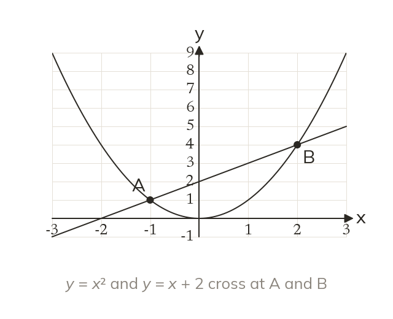
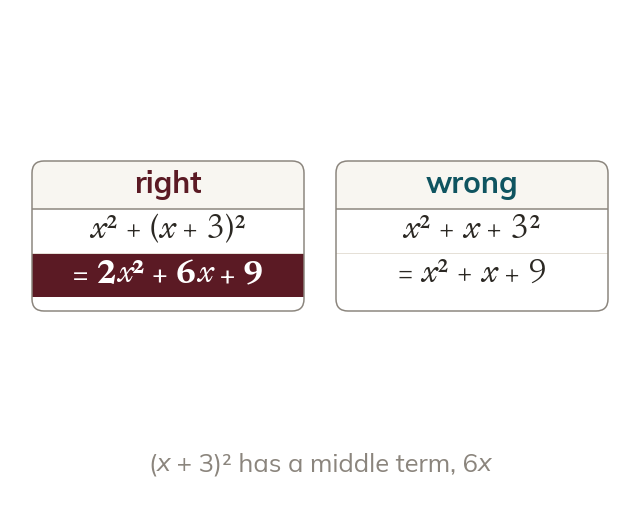
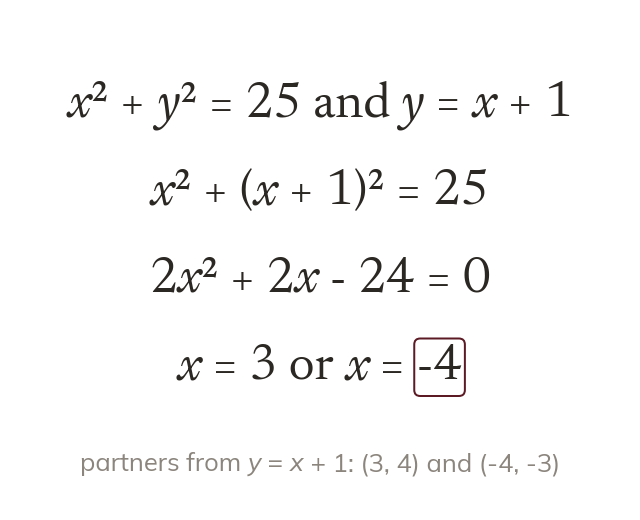
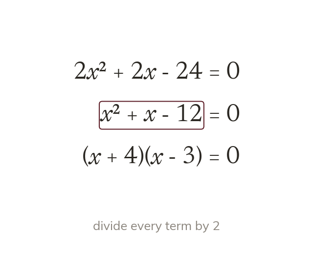

A line meets a curve
Substitute the linear expression into the quadratic. Each crossing of the two graphs is one solution pair.
A straight line can cross a curve twice, touch it once, or miss it. Today we solve a linear and a quadratic equation together, and find where a line meets a circle.
Work down the page at your own pace. Write every answer in your book first, then click to check it.
Read each card, then follow the worked examples one step at a time.

Substitute the linear expression into the quadratic. Each crossing of the two graphs is one solution pair.

The substituted expression goes in a bracket. Squaring the bracket gives a middle term.
Pick an answer. If it's wrong, the feedback tells you which mistake it was.
Read each card, then follow the worked examples one step at a time.

A circle is solved with a line in the same way. Substitute the line, then solve the quadratic.

A common factor in the quadratic can be divided out. The smaller numbers are quicker to factorise.
Pick an answer. If it's wrong, the feedback tells you which mistake it was.
Finished? Next lesson: 11H.3.3 Factorising to Cancel Fractions.
Log in, then search for a code to practise that skill.
Videos, worksheets and more on each part of this lesson.